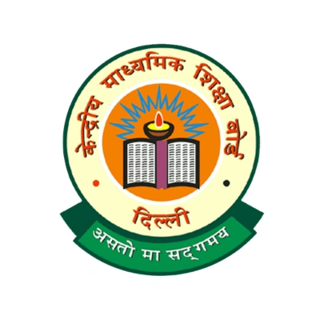
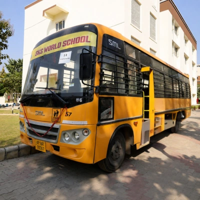
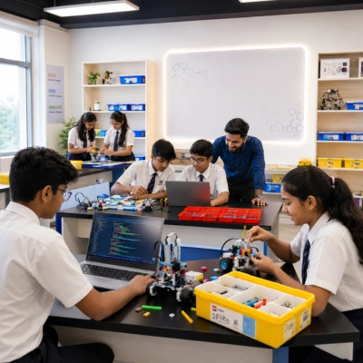
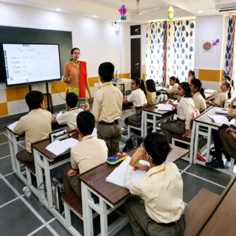

SKS World School, being one of the best schools in Greater Noida West, is an English-medium, co-educational institution that runs under the aegis of the SKS Educational & Social Trust, led by its dynamic and visionary Chairman Shri S.K. Sharma. The school provides CBSE curriculum-based education and is located in the heart of Greater Noida West — 3 km from Crossing Republik (Ghaziabad), 5 km from Sector-119 Noida, and 9 km from Noida City Centre Metro Station.
No enquiry fee. Your details remain confidential. Our admission team will contact you shortly.
Teacher–Student Ratio
CBSE Board Results
SKS World School, being one of the best schools in Greater Noida West, is an English-medium co-educational institution that runs under the aegis of the SKS Educational & Social Trust, led by its dynamic and visionary Chairman Shri S.K. Sharma. The school provides CBSE curriculum-based education and is widely regarded as one of the best schools in Greater Noida West.
Located in the heart of Greater Noida West and enveloped by multi-storied buildings, the school gives every child individual care and attention at a teacher–student ratio of 1:20. Learning happens by doing, supported by smart classrooms, well-equipped labs and a broad co-curricular programme of music, dance, sport and educational visits.
Student Ratio
CBSE Results
International School Award
Pre-Nursery Onwards
CBSE Affiliation No.
SKS World School holds the International School Award 2018-21 for its global outlook and project-based, collaborative learning.

The school follows the CBSE curriculum and is affiliated to the Central Board of Secondary Education, New Delhi (Affiliation No. 2134098).

Experienced drivers are in service of new buses, with routes customised to each pick-up point to reduce travel time.

A dedicated robotics lab, set up in association with LEGO, where children build, code and problem-solve from an early age.
SMS updates and a mobile app keep parents connected to the school and informed about their child day to day.

Every classroom is a smart classroom with an interactive board, with hardware supporting the syllabus modules for digital learning.
The campus is built around active, hands-on learning. Well-equipped science labs support practical experience in physics, chemistry and biology; a fully equipped mathematics lab and a computer lab loaded with the latest software back concept-based learning; and every classroom is a smart classroom. Beyond the classroom, a state-of-the-art library, an air-conditioned auditorium with a high-quality sound system and high-resolution projector, a huge indoor swimming pool and a playground spanning over 150 metres give every child room to grow.
SKS World School follows the CBSE curriculum and is affiliated to CBSE, New Delhi (Affiliation No. 2134098). The curriculum is strictly based on the National Curriculum Framework and the National Education Policy, with a pedagogical structure aimed at learning without burden — making studying joyful and moving beyond the textbooks.
Foundational / Preschool (Pre-Nursery to KG), Preparatory (Classes I–V), Middle (Classes VI–VIII), Secondary (Classes IX–X) and Senior Secondary (Classes XI–XII, all streams).
NCERT textbooks as per CBSE guidelines. English is the medium of education, with Hindi, Sanskrit and French; plus Mathematics, EVS / Science, Social Science, computer education from Class III, and the arts.
Continuous individual assessment with no formal testing in KG; periodic assessments, projects and practicals from Class I; a two-term structure for Classes VI–X; and terminals, revision and pre-board tests for Classes XI–XII, following CBSE Board examination guidelines.
A holistic approach that encourages critical thinking, creativity and holistic development — students learn by doing, supported by smart classrooms, subject labs, robotics, documentary-based education and annual educational trips.

“We play as we learn and we learn as we play.” A play- and activity-based foundational stage focused on socialisation, language, motor development and basic cognitive skills, with continuous individual assessment and no formal testing.

The Primary years build strong foundations in language, mathematics, and environmental studies through the NCERT-based CBSE curriculum, with plenty of hands-on and project work.

The Middle stage deepens subject knowledge and introduces structured lab work in Science and Mathematics, alongside a wide co-curricular programme of music, sport, and educational visits.

Classes IX–X prepare students for the CBSE Class X board examination; all streams are available in Classes XI–XII, leading to the Class XII board examination.
Submit the application form at the school office or register online at skswsgnw.ac.in within the specified dates, and register the candidate for a pre-admission test / interview. Registration forms are available on all working days at the Administration Office from 9:00 AM to 2:00 PM. Incomplete forms are not processed.
Attach a self-attested copy of the government birth certificate, a medical fitness certificate and blood-group certificate from an MBBS doctor / RMP, address and identification proof of parents, four passport photos of the student and two of each parent, and a T.C. from the last school (Class II onwards) once admission is confirmed.
A small written test is taken at the pre-primary level, and admission is confirmed after an interaction / interview with the Principal. Dates and timings are intimated telephonically and displayed on the school website.
On confirmation of admission, deposit the fee within the stipulated time, failing which the offer of admission stands cancelled. The school does not accept any donation for admission.
Collect the admission letter, book list and uniform details, and join the SKS World School family.
Admission is to the age-appropriate class, on or before 31 March of the calendar year in which admission is sought. Registration is the first step; class sizes are 25 for Kindergarten, 30 for Classes I–II and 35 for Classes III–XII, at a teacher–student ratio of 1:20. For exact age requirements for your child's class, please contact the school office.
| Stage | Classes | Admission Basis |
|---|---|---|
| Foundational | Pre-Nursery, Nursery, KG | Registration + small written test + interaction with the Principal |
| Preparatory | Classes I–V | Registration + document submission + interaction |
| Middle | Classes VI–VIII | Registration + written test + interaction |
| Secondary | Classes IX–X | Registration + written test + interaction |
| Senior Secondary | Classes XI–XII | Registration + written test; stream subject to the Class X CBSE result |
SKS World School is located at HS-04, Sector-16, Greater Noida West. Customised bus routes with experienced drivers bring students in from Crossing Republik, the Noida sectors and Indirapuram, with travel times kept short.
Walk through our Greater Noida West campus — smart classrooms, subject labs, the library, sports courts, skating rink and indoor swimming pool — before you visit in person.
From festival celebrations and inter-house competitions to excursions and adventure camps, take a closer look at life beyond the classroom.
 Republic Day
Republic Day Republic Day
Republic Day Republic Day
Republic Day Dussehra
Dussehra Dussehra
Dussehra Dussehra
Dussehra Samuh GaanSamuh Gaan
Samuh GaanSamuh Gaan Grandparents Day
Grandparents Day Grandparents Day
Grandparents Day Grandparents Day
Grandparents Day Grandparents Day
Grandparents Day Grandparents Day
Grandparents Day Exhibition
Exhibition ExhibitionExhibition
ExhibitionExhibition Exhibition
Exhibition ExcursionExcursion
ExcursionExcursion Adventure Camp
Adventure Camp Adventure Camp
Adventure Camp Adventure Camp
Adventure Camp Adventure Camp
Adventure Camp Adventure Camp
Adventure Camp Basant Panchami Camp
Basant Panchami Camp Basant Panchami Camp
Basant Panchami Camp Basant Panchami Camp
Basant Panchami Camp Basant Panchami Camp
Basant Panchami Camp Basant Panchami Camp
Basant Panchami Camp Basant Panchami Camp
Basant Panchami Camp“My child always talks about school and the work he is doing, he is getting on really well. I am so pleased with how my child has progressed, thank you.”
Mr. Rakesh Singh
F/O Shaurya Singh, Class Pre Nursery
“We just wanted to thank all the staff at SKS World School. I am amazed at the great progress Yashil has made since joining in October. He loves being at school and tells me it's ‘just like being at home, being part of a family’. I feel the great sense of community that runs throughout the school from teachers and staff, makes SKS World School very special.”
Mrs. Urvi Rastogi Sharma
M/o Yashil, Class Pre-Nursery
“My ward is doing well in her studies & ma'am has also shown her great efforts.”
Mr. Vivek
F/O Aaradya, Class I-D
The parents have to register the child (online on the school website) for the age-appropriate class and submit documents accordingly.
The school follows the CBSE curriculum and is affiliated to CBSE (Affiliation No. 2134098).
A small written test is taken for the pre-primary level, and the admission is confirmed after an interaction / interview with the Principal.
Yes. The school admits boys and girls from Pre-Nursery onwards.
We maintain 25 children per class for Kindergarten. However, from Class I and II there will be 30, and from III to XII, 35 students.
The ratio is 1:20. The school is very particular that each student be provided individual care and attention.
Yes, all the school buses are new. The bus routes are customised according to the pick-ups so as to reduce the travel time.
Meals are available at the canteen on a pay-and-buy basis.
The school has implemented measures like CCTV, a soft padded play area, a separate bus boarding lane, SMS alerts to parents, and an infirmary.
A holistic approach where students are taught the way they want to learn. Students learn by doing.
Yes, admissions are open in Class XI. All streams are available. Admission forms can be filled online or in school, a written test will be conducted, and admission to the desired stream is subject to the Class X CBSE result.
The students of schools under SKS Group have consistently achieved 100% results in the Board exams conducted by the CBSE.
Admissions are open from Pre-Nursery onwards, and in Class XI for all streams. Share your details and our admission team will guide you through eligibility, documents, fees and the next steps.
Apply NowFill in your details and our admission team will contact you shortly — or use the map to plan your visit to our campus at HS-04, Sector-16, Greater Noida West.
![Illustration of the SKS World School campus entrance](data:image/svg+xml,%3Csvg%20xmlns%3D%27http%3A%2F%2Fwww.w3.org%2F2000%2Fsvg%27%20width%3D%271600%27%20height%3D%27900%27%20viewBox%3D%270%200%201600%20900%27%20preserveAspectRatio%3D%27xMidYMid%20slice%27%20role%3D%27img%27%20aria-label%3D%27Illustration%20of%20the%20school%20campus%20entrance%27%3E%3Crect%20width%3D%271600%27%20height%3D%27900%27%20fill%3D%27%23f2e4d0%27%2F%3E%3Ccircle%20cx%3D%271300%27%20cy%3D%27170%27%20r%3D%2778%27%20fill%3D%27%23e9c98f%27%2F%3E%3Crect%20x%3D%270%27%20y%3D%27640%27%20width%3D%271600%27%20height%3D%27260%27%20fill%3D%27%23e7d4bd%27%2F%3E%3Cg%20fill%3D%27%23f7ede0%27%20stroke%3D%27%237a2e2e%27%20stroke-width%3D%279%27%20stroke-linejoin%3D%27round%27%20stroke-linecap%3D%27round%27%3E%3Crect%20x%3D%27430%27%20y%3D%27360%27%20width%3D%27740%27%20height%3D%27300%27%2F%3E%3Cpath%20d%3D%27M540%20360%20L800%20236%20L1060%20360%20Z%27%2F%3E%3Crect%20x%3D%27560%27%20y%3D%27402%27%20width%3D%2726%27%20height%3D%27238%27%2F%3E%3Crect%20x%3D%27678%27%20y%3D%27402%27%20width%3D%2726%27%20height%3D%27238%27%2F%3E%3Crect%20x%3D%27896%27%20y%3D%27402%27%20width%3D%2726%27%20height%3D%27238%27%2F%3E%3Crect%20x%3D%271014%27%20y%3D%27402%27%20width%3D%2726%27%20height%3D%27238%27%2F%3E%3Crect%20x%3D%27300%27%20y%3D%27470%27%20width%3D%27150%27%20height%3D%27190%27%2F%3E%3Crect%20x%3D%271150%27%20y%3D%27470%27%20width%3D%27150%27%20height%3D%27190%27%2F%3E%3C%2Fg%3E%3Crect%20x%3D%27762%27%20y%3D%27486%27%20width%3D%2776%27%20height%3D%27154%27%20fill%3D%27%237a2e2e%27%2F%3E%3Cg%20fill%3D%27%23e9c98f%27%20stroke%3D%27%237a2e2e%27%20stroke-width%3D%276%27%3E%3Crect%20x%3D%27338%27%20y%3D%27508%27%20width%3D%2774%27%20height%3D%2760%27%2F%3E%3Crect%20x%3D%271188%27%20y%3D%27508%27%20width%3D%2774%27%20height%3D%2760%27%2F%3E%3C%2Fg%3E%3Cg%20stroke%3D%27%237a2e2e%27%20stroke-width%3D%278%27%20stroke-linecap%3D%27round%27%3E%3Cpath%20d%3D%27M800%20236%20L800%20120%27%2F%3E%3Cpath%20d%3D%27M280%20660%20L1320%20660%27%2F%3E%3C%2Fg%3E%3Cpath%20d%3D%27M800%20126%20L866%20150%20L800%20174%20Z%27%20fill%3D%27%23b5472e%27%2F%3E%3Cg%20fill%3D%27none%27%20stroke%3D%27%237a2e2e%27%20stroke-width%3D%277%27%20stroke-linecap%3D%27round%27%3E%3Cpath%20d%3D%27M470%20700%20h660%20M500%20736%20h600%27%2F%3E%3C%2Fg%3E%3C%2Fsvg%3E)